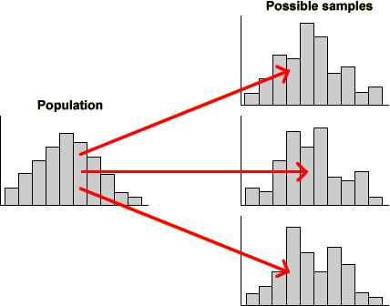

Variability
The mechanism of sampling from a population results in sample-to-sample variability in the information that we obtain from the samples.

Sample information about the population
However in practice, we only have a single sample that has been collected to provide information about the population. Sampling results in incomplete information about the population since we do not have information about some of the population members.
What information does a sample provide about the underlying population?
Effect of sample size
In later chapters, we will describe in much more detail how to use sample information to make inference about an underlying population. At this point, we simply note that we must take account of sample-to-sample variability when interpreting sample data and that the larger the sample size, the more information we have about the population.
Bigger samples mean more stable and reliable information about the underlying population.
Calorie intake in UN countries
It is important to assess trends in nutrition around the world, but researchers often need to wait over a year until data about nutritional intake in any year is made publicly available. A United Nations researcher decides to request nutritional information from a random sample from all countries in 2014 before the data have been published.
Although we cannot demonstrate what would happen at the start of a future year, we can use the published information from 2011-13 to demonstrate the kind of variability that is likely to be observed. The diagram below shows food intake in calories per capita per day.
The diagram above shows a stacked dot plot, histogram and box plot for the calorie intakes of a random sample of 10 countries from this 'population'. Click on any cross on the dot plot to display the name of the country and its exact calories.
Click Take sample a few times to observe the sample-to-sample variability in the three displays. With a sample size as low as 10, the sample distributions vary considerably. In some samples, there even appear to be outliers or clusters.
From a single small sample, there is a lot of uncertainty about the population distribution.
Use the pop-up menu to change the sample size to 40, then take a few more samples. Observe that the graphical displays now become less variable. Repeat with a sample size of 100 and observe that the overall features of the sample distribution change even less from sample to sample.
The bigger the sample size, the more consistently the sample distribution reflects the distribution in the underlying population.
Finally, use the pop-up menu to display the nutritional intakes of all 173 countries — the population distribution about which we are really interested.
Any of the samples of 100 countries give a close approximation to the population distribution of calorie intakes.
Even the samples of 40 countries mostly give a reasonable impression of the shape of the population distribution.